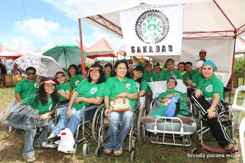
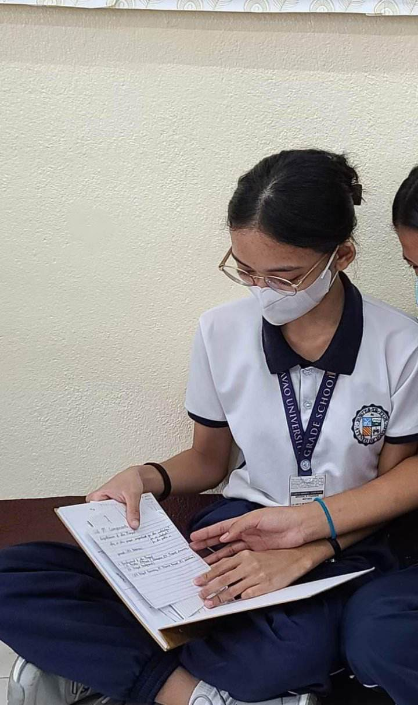

PARTNER INSTITUTION:

As many may know, The SAKADAB community consists of people, who have mental or physical difficulties,
and they reside there because they were excluded from modern society and left alone by their families and loved ones. The SAKADAB community is part of a program called SAKADAB,
which assists people with disabilities and those who are struggling financially, mentally, or physically.
About The Web Designer

The designer of this webpage is Kiera Padasas. She is the leader of Group 3B from class Canisius. She has been a student in Ateneo de Davao University for 7 years.
She is responsible ang helpful to her groupmates. She likes to relax and spend time with herself during her free time.
She likes to hang out and spend quality time with her friends.
Sources:
Source 1
Source 2
Source 3